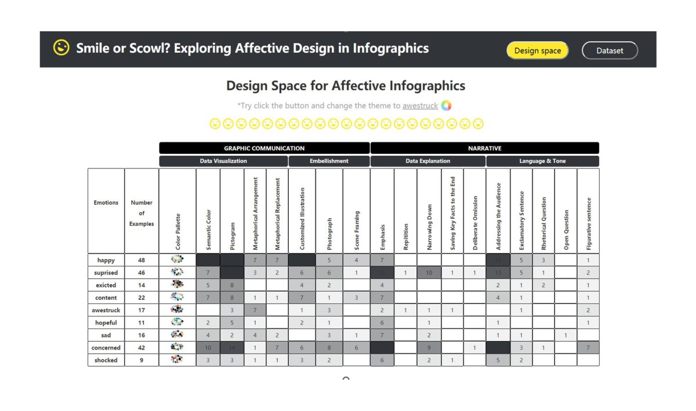
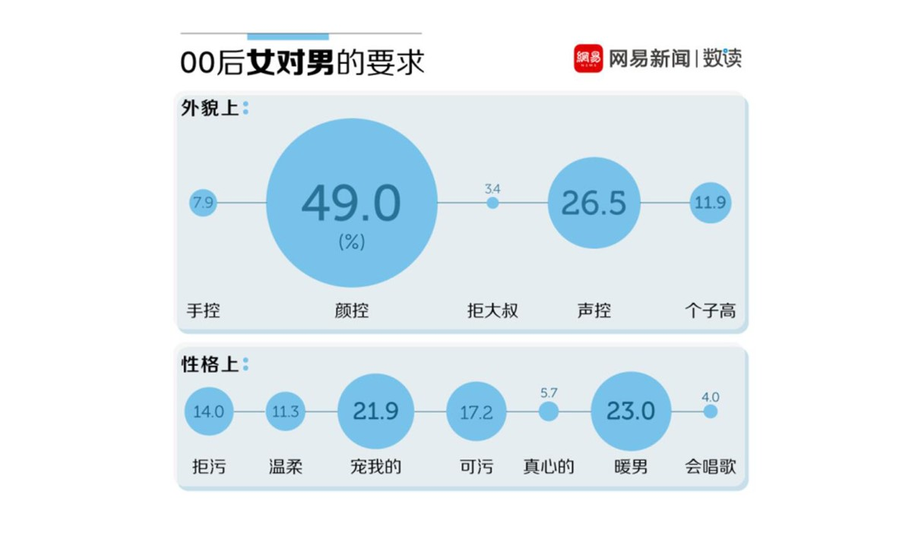
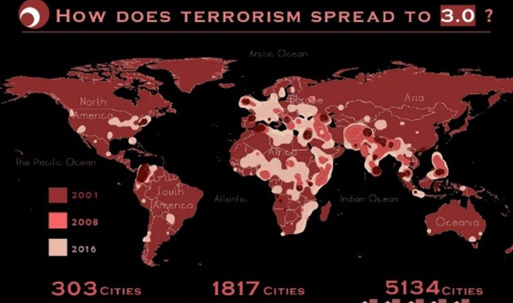

数据分析与可视化 Data analysis and visualization

Z世代三坑服饰行业数据研究
数据研究报告 / 文本分析 / 2021Design must be functional and functionality must be translated into visual aesthetics
Read More 视频Calliope：数据动画创作平台
工具开发 / Web/VS/Git / 2019-2020Calliope将丰富的图表动画与基础的图文编辑功能相结合，制作优秀的数据视频。我负责构建画布操作、资源管理、音乐、文件管理系统，包含文本、图形生成、拖拽、旋转、颜色管理、风格设置等重要功能开发和界面设计
Read More 链接

情感可视化：Smile or Scowl? Looking at Infographic Design Through the Affective Lens
Paper / 可视化 / 2020什么因素触发了信息图表中的情感反应？参与数据分析，负责网页前后端设计与开发，网页交互式呈现设计因素与设计案例，加入了图片瀑布流、主题色更换等功能。
Read More PDF
莆田医网-PacificVis2020入围作品
数据可视化 / D3 / 2020搜集公司历史信息，使用桑基图大致勾勒出莆田医院的运营肖像。负责桑基图视觉设计开发，以浮游点表达莆田系医院的数量，流动代表医院的生命历程，通过滑动交互、悬浮、拖拽等操作呈现不同结果
Read More 链接
全球犯罪热点可视化交互网站
毕设 / WebGis/D3 / 2018基于开源的全球犯罪数据，运用多视图的地理信息数据可视化技术，包括Openlayer、leaflet以及D3、echarts、highcharts库，呈现可交互的犯罪时序热点分析结果，以此为主题撰写了毕设论文。
Read More 待上传网页

00后相亲交友观全面观察
数据新闻 / 文本分析 / 2017从三大00后贴吧爬取了近期的2.3万个帖子，经过数据清洗得到了22696个“相亲帖”，进行多维度分析，观察00后的相亲交友观。负责了策划选题、数据爬取、文本分析、视觉、撰文
Read More 网易数读

恐怖主义3.0
信息图 / AI/PS / 2017Design must be functional and functionality must be translated into visual aesthetics
Read More Infographic

{kind=link}
Inspirational Website
by Admin / Web Design / 14Design must be functional and functionality must be translated into visual aesthetics
Read More